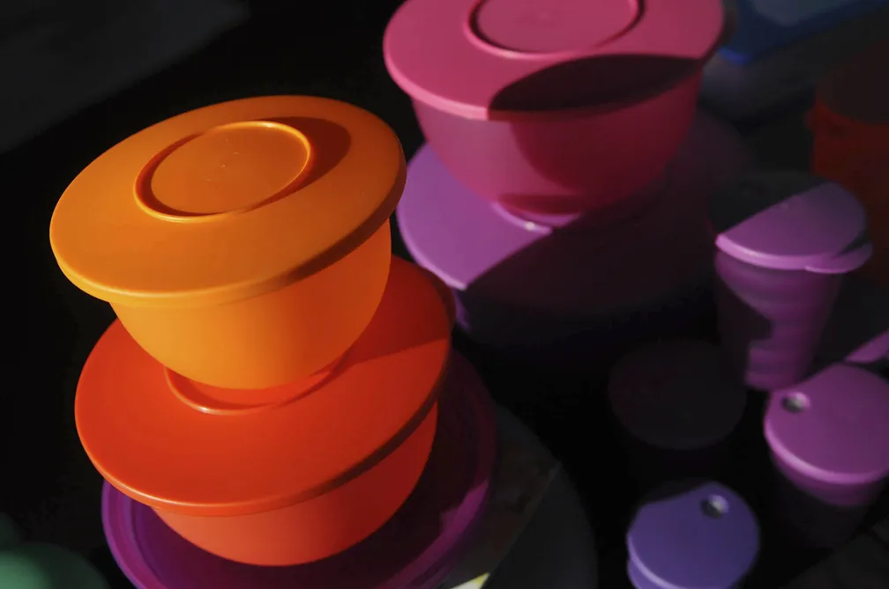

Por Isabela Bolzani, g1
11/04/2023 15h15 Atualizado há 15 horas
Clique para assistir ao video A Tupperware Brands, fabricante dos famosos potes de plástico, informou que existem “dúvidas substanciais” sobre sua capacidade de continuar operando. Em outras palavras: a empresa está com dificuldades financeiras que podem levá-la à falência (leia mais abaixo a história da empresa).
Em comunicado divulgado ao mercado na última sexta-feira (7), a empresa explicou que enfrenta problemas de crédito e informou que recebeu uma notificação da Bolsa de Valores de Nova York (NYSE, na sigla em inglês), indicando que pode ter o registro cancelado.
Entenda abaixo o que aconteceu com a empresa e um pouco de sua história.
Em resumo, a Tupperware explicou em um comunicado que pode deixar de cumprir cláusulas de contratos de crédito. Isso porque emendas estabelecidas ao contrato inicial tiraram a liquidez do caixa da empresa no curto prazo.
Simplificando: a Tupperware fechou três contratos de crédito que foram firmados com credores em novembro de 2021:
- uma linha de crédito rotativo com garantias, de US$ 220 milhões;
- um empréstimo a prazo, de US$ 400 milhões;
- outro empréstimo a prazo de US$ 200 milhões.
Todos os financiamentos tinham vencimento em julho de 2025. Acontece que os contratos foram revistos no início de 2023, de maneira que parte do crédito rotativo foi convertida em um empréstimo a prazo de US$ 200 milhões. Assim, os recursos disponíveis para tomada nessa linha rotativa foram reduzidos.
A empresa ainda explica que a novidade no contrato também estabelecia juros progressivos ao longo do tempo para os créditos tomados pela empresa. Estava prevista a possibilidade de um adicional de 4,75 pontos percentuais (p.p.) a depender do índice de alavancagem da companhia — a alavancagem é um indicador que mostra o quanto a empresa depende de capital de terceiros para manter sua operação.